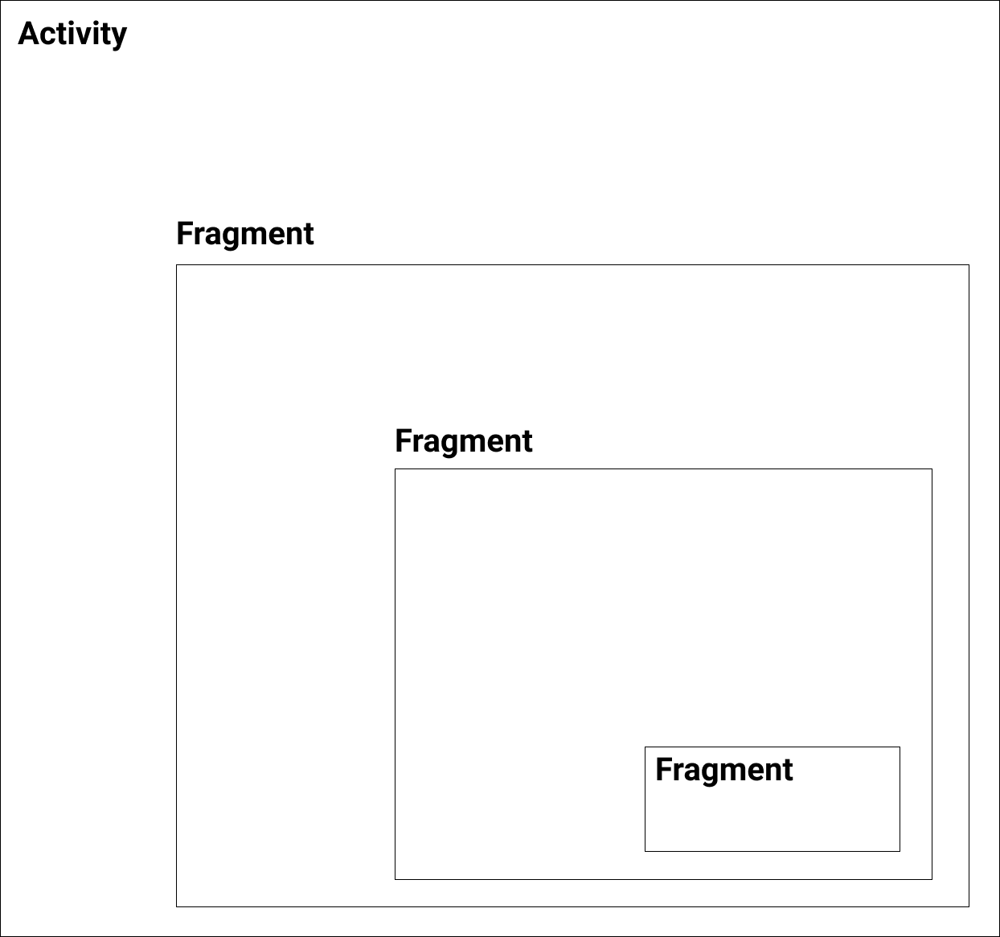
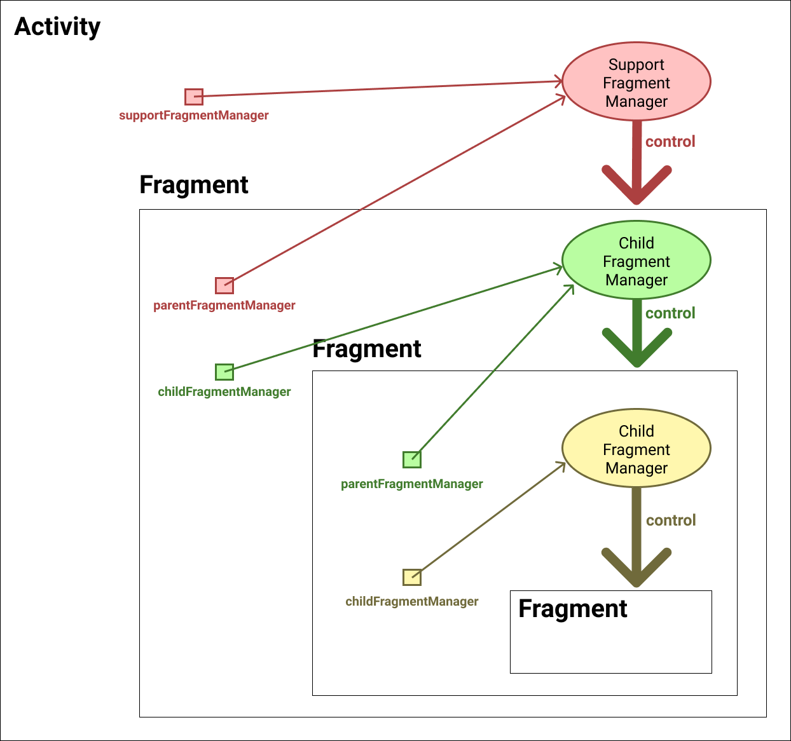

[Android] Fragment - (2) 프래그먼트 매니저(Fragment Manager)
프래그먼트 매니저
프래그먼트 매니저(Fragment Manager)는 프래그먼트의 추가, 삭제, 교체 등을 담당하는 객체입니다. Activity클래스의 supportFragmentManager속성값으로 프래그먼트 매니저에 접근할 수 있습니다.
1 | class MainActivity : AppCompatActivity() { |
프래그먼트 트랜잭션
프래그먼트 트랜잭션(Fragment Transaction)은 프래그먼트 연산들의 한 단위를 나타내는 클래스입니다. 트랜잭션은 프래그먼트 매니저의 beginTransaction()메소드를 호출하여 시작할 수 있습니다.
1 | val fragmentMananger = supportFragmentManager |
프래그먼트 트랜잭션에는 프래그먼트 연산을 위한 다양한 메소드가 존재합니다.
(1) add()
컨테이너 뷰에 프래그먼트를 추가합니다.
1 | val fragmentA = FragmentA() |
다음과 같이 생명주기 메소드가 호출됩니다.
1 | [FragmentA] onAttach |
만약 컨테이너 뷰에 이전 프래그먼트가 있으면 이를 삭제하지 않고 위에 추가합니다.
1 | val fragmentB = FragmentB() |
다음과 같이 생명주기 메소드가 호출됩니다.
1 | [FragmentB] onAttach |
(2) remove()
컨테이너에서 프래그먼트를 삭제합니다.
1 | val fragmentA = FragmentA() |
다음과 같이 생명주기 메소드가 호출됩니다.
1 | [FragmentA] onPause |
(3) replace()
기존 프래그먼트를 삭제하고 새로운 프래그먼트를 추가합니다. remove() 후 add()를 호출한다고 생각하면 됩니다.
컨테이너에 FragmentA가 이미 있다고 가정합시다. 이제 다음과 같이 FragmentB로 대체할 수 있습니다.
1 | transaction.replace(R.id.activity_main_fl, fragmentB) |
생명주기 메소드는 다음과 같이 호출됩니다.
1 | [FragmentA] onPause |
기존에 있던 FragmentA는 onDestroy()까지 호출되어 메모리에서 사라지는 것을 확인할 수 있습니다.
(4) commit()
트랜잭션은 다음과 같이 여러 연산으로 구성될 수 있습니다. 따라서 연산 후 반드시 commit()메소드를 호출해서 변경사항을 적용해야합니다.
1 | val fragmentB = FragmentB() |
(5) 그 외의 트랜잭션 연산
트랜잭션 연산에는 위에서 살펴본 연산 외에도 show(), hide(), attach(), detach(), isEmpty()등이 있습니다.
childFragmentManager, parentFragmentManager
우리는 액티비티에서 프래그먼트를 제어하기위해 supportFragmentManager속성을 사용했습니다.
1 | class MainActivity : AppCompatActivity() { |
이제 프래그먼트를 살펴봅시다. 프래그먼트에는 fragmentManager, childFragmentManager, parentFragmentManager속성이 존재합니다.
1 | class SubFragment: Fragment() { |
(1) fragmentManager (deprecated)
더 이상 사용하지 않습니다.
(2) parentFragmentManager
현재 프래그먼트를 제어하는 부모 액티비티나 부모 프래그먼트의 프래그먼트 매니저를 반환합니다.
parentFragmentManager를 통해서 자신을 다른 프래그먼트로 교체하는데 유용하게 사용할 수 있습니다.
(3) childFragmentManager
현재 프래그먼트는 여러 개의 프래그먼트를 가질 수도 있습니다. 현재 프래그먼트는 childFragmentManager속성을 사용하여 자식 프래그먼트를 제어합니다.
(4) 예제
다음과 같이 액티비티 안에 프래그먼트가 있고, 그 안에 또 프래그먼트가 있고, 그 안에 또 프래그먼트가 있다고 가정합시다.

이러한 구조에서 supportFragmentManager, parentFragmentManager, childFragmentManager가 가리키는 객체는 다음과 같습니다.
